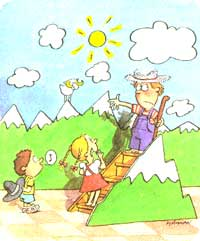

LAST LAUGH
All the world's a stage...sort of.
My stage career was a downhill slide all the way-right into the orchestra pit. From the very beginning, it was apparent that I'd never tread the boards with Katharine Hepburn even though we're roughly the same age, and even though we're both from New England. But I kept trying, which was plain dumb.
When I was eight, living in Bushwillie Farm in Southern Vermont, my parents gave me a magic set-a big box full of devious and delightful gadgets. I was mad for magic. I practiced for hours, in between farm chores. I got so I could make things vanish. I'd start with three shiny red balls between the fingers of my right hand and PRESTO! They'd be gone in a flash! I was convinced the next Houdini had arrived.
One Saturday morning, I put on a show. It was in our living room. I had a white sheet for a curtain, and my parents and four of their closest, most interesting friends for an audience. Sellout crowd. My older brother rolled up the curtain and the first trick went well. So did the second. The third trick went nowhere. I was supposed to pull a rope of bright, tied-together handkerchiefs out of my left sleeve. Instead, nothing came out. They were stuck, probably near the small of my back. My brother rolled down the curtain. There was perfunctory applause: the eerie sound of 12 hands clapping.
After that, my interest in magic dwindled quite a bit, but not-regrettably-my interest in the stage. It took several more appearances to cure me.
That winter at Cheney Hill School, the second of the two one-room schoolhouses I attended, my teacher decided that for Parent's Night we kids would do a dramatization of the classic story Heidi. You know. Lots of yodeling and climbing up and down the Swiss Alps. I volunteered to play Peter the Goat Boy, Heidi's friend, and by ginger I got the part... because no one else volunteered to play Peter the Goat Boy. Heidi and I were the principals, the stars; all the others, I seem to recall, were just yodelers except they didn't yodel as much as gurgle and gargle. Heidi was played brilliantly by one of the Pulling girls, dressed in a peasant costume with her hair in a pigtail. The teacher had me in overalls, wearing a grungy old farmer's hat. Both of us were barefoot, which seemed foolish if we were going to climb up and down the Swiss Alps.
Heidi and I had our lines down pat. Rehearsals went smooth as silk. But on Opening Night (which was also Closing Night), disaster struck. I couldn't find my hat. Searched high and low. I swear to this day that someone stole it. Teacher was more than a little annoyed. She rummaged around in her car and, incredibly, came up with a straw boater, the kind of hat that Fred Astaire frequently wore. She put it on a table, made an angry fist, and punched the daylights out of it to give it an old "rustic" look. Then she slapped it on my head. It didn't look "rustic": It looked more like a punched-out straw boater, and when we all took the stage-which was actually the front of the classroom-every single person in the audience recognized it as such. They must have. I stumbled through my lines and thought I could hear hysterical, barely suppressed laughter in the back row, and it rather threw me off. I had turned Heidi into a farce.
Meanwhile, I continued to take violin lessons, and had a marvelous teacher, Mr. Norris, a New Zealander with a bass voice. He liked to sing along with me when I was playing my pieces. Somehow, it helped.
I got to be pretty good. I got to be so good that my parents didn't have to leave the house when I was practicing. I began to play the Seitz student concertos. In the spring of my second year, Mr. Norris held a recital in a small church. Ten of his students, including me, took part. Parents occupied the first two pews, up close near the violinists.
Each student played a solo. I played J. S. Bach's "Air on a G String," and I didn't make a single mistake. Bach himself would have been pleased. Then there was the Grand Finale. It was Rimsky- Korsakov's "Flight of the Bumblebee," played in unison, at breakneck speed, by all 10 students.
Not quite in unison. Three or four bars into "Flight of the Bumblebee," I fell hopelessly behind. Once behind, I could never catch up. I tried to fake it. Twiddled my fingers and pushed and pulled the bow, up and down, up and down, without making a sound. I'm sure I fooled no one, least of all Mr. Norris.
That did it. I abandoned the stage forever, but I can't wind this up without nothing that, during my stage career, no one ever suggested that I go out there and break a leg. That was a comfort.
|
RICK KIRMAN |
 |
|